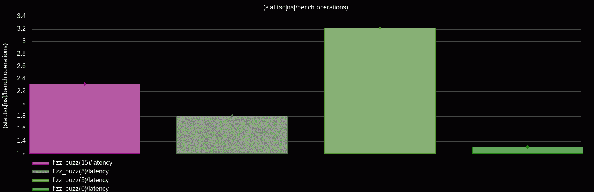
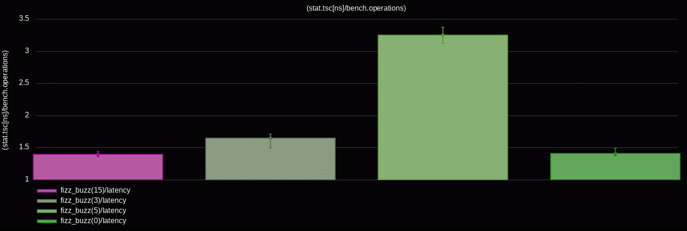
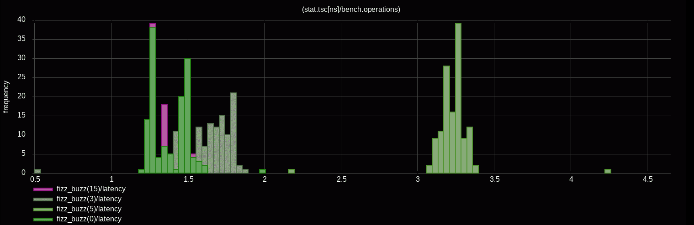
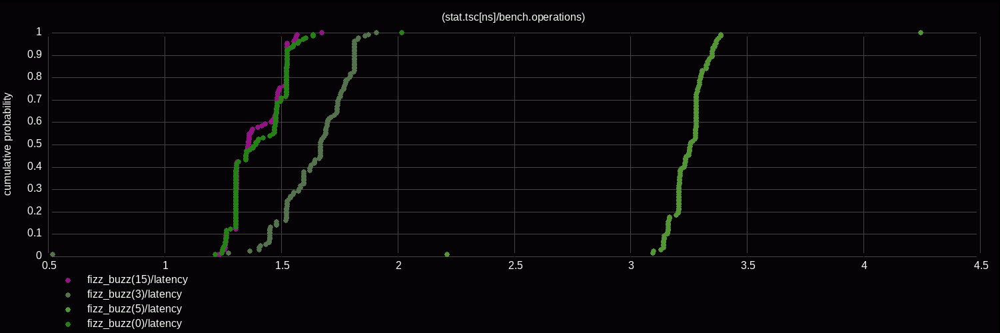
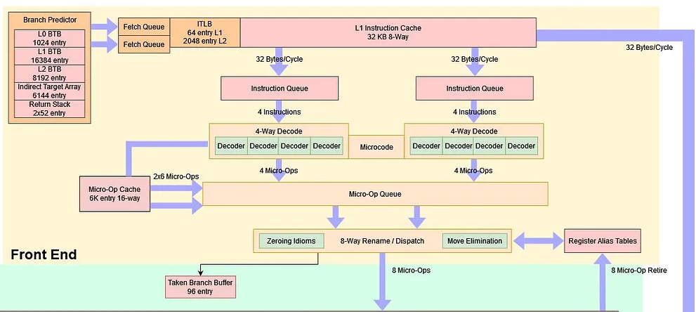

<!doctype html>
<html>
  <head>
    <meta charset="utf-8">
    <meta name="viewport" content="width=device-width, initial-scale=1.0, maximum-scale=1.0, user-scalable=no">

    <title>Performance Is Not a Number: Avoiding Microbenchmarking Pitfalls</title>

    <link rel="stylesheet" href="reveal.js/css/reveal.css">
    <link rel="stylesheet" href="reveal.js/css/theme/league.css" id="theme">
    <link rel="stylesheet" href="extensions/plugin/line-numbers/line-numbers.css">
    <link rel="stylesheet" href="extensions/css/highlight-styles/zenburn.css">
    <link rel="stylesheet" href="extensions/css/custom.css">

    <style>
      .reveal h1, .reveal h2, .reveal h3, .reveal h4, .reveal h5 { text-transform: none; }
    </style>

    <script>
      var link = document.createElement( 'link' );
      link.rel = 'stylesheet';
      link.type = 'text/css';
      link.href = window.location.search.match( /print-pdf/gi ) ? 'reveal.js/css/print/pdf.css' : 'reveal.js/css/print/paper.css';
      document.getElementsByTagName( 'head' )[0].appendChild( link );

      function set_address(self, remote, local) {
        if (window.location.search.match("local")) {
          self.href = local;
        } else {
          self.href = remote;
        }
      }
    </script>

    <meta name="apple-mobile-web-app-capable" content="yes">
    <meta name="apple-mobile-web-app-status-bar-style" content="black-translucent">
  </head>

  <body>
    <div class="reveal">
      <div class="slides">
          <script type="text/template">
          </script>
          </section>

          <section data-markdown=""
                   data-separator="^====+$"
                   data-separator-vertical="^----+$">
          <script type="text/template">
<!-- .element: data-background-image="images/title.png" data-background-size="100%" -->

<br />
<br />
<br />

<p align="left">

</p>

----

#### Performance - [https://www.intel.com/.../articles/moores-law.html](https://www.intel.com/content/www/us/en/history/virtual-vault/articles/moores-law.html)
<!-- .element: style="text-align:left" -->

<table>
  <tr>
  <td>
  <pre style="font-size:17px">
(~) Frequency
  - Base: 3–5 GHz
  - Boost: 5–6 GHz
  - Overclocked: ~9 GHz<br />
(⬆️) Transistors
  - More Cores
  - More Cache
  - Improved Execution
  - Improved Parallelism
  - ...<br />
</code></pre>
  </td>
  <td>
    
  </td>
</tr>
</table>

----

#### Nanosecond count
<!-- .element: style="text-align:left;" -->

```cpp
 // More instructions per cycle
 // 4Ghz cpu from 2005 will be much slower than 4Ghz cpu from 2025

  benchmark            cycles    time // 5Ghz
  -------------------- ------ -------
  1 cycle execution         1  0.25ns
  dL1                      3-4  0.50ns
  branch misprediction     10-20  3.00ns
  dL2                      10-15  3.00ns
  dL3                      50 10.00ns
  DRAM                    350 ~70.00ns
```

----

#### Performance Analysis
<!-- .element: style="text-align:left" -->

```cpp
 └─ System          // OS, I/O, ...
    └── Application // design, algorithms, data structures, ...
      └── µArch     // hardware effects
```

<!--// Low-Level: SIMD, SWAR, DOD, CTE, Par, ...-->

----

### [0] Always measure
<!-- .element: style="text-align:left" -->

```cpp
// "If you can't measure it, you can't improve it"
```

----

#### Always measure - https://www.brendangregg.com
<!-- .element: style="text-align:left" -->

```sh
 └─ System
      bpftrace -e 'tracepoint:syscalls:sys_enter_* { @[probe] = count(); }'
      bpftrace -e 'tracepoint:tcp:tcp_connect { printf("%d", args->dport); }'
```
<!-- .element: style="text-align:left; font-size:19px;" -->

<table>
<tr>
<td></td>
<td></td>
</tr>
</table>

----

#### Always measure
<!-- .element: style="text-align:left" -->

```sh
 └─ System
    └── Application

          perf probe -x /usr/lib/libc.so malloc
          perf record -g probe_libc:malloc ...

          vtune -collect hotspots -- ...
          AMDuProfCLI --profile -t cpu -- ...

          (gdb) record function-call-history /ilc
          (gdb) run
            1  bar     inst 1,4     at foo.c:6,8
            2  foo     inst 5,10    at foo.c:2,3
            3  bar     inst 11,13   at foo.c:9,10
          (gdb) reverse-step
```

----

#### Always measure - https://perf.wiki.kernel.org
<!-- .element: style="text-align:left" -->

```cpp
 └─ System
    └── Application

          import prof; // https://github.com/qlibs/prof

          int main() {
            prof::linux_perf profiler{"/dev/shm/perf"};

            profiler.start(); // syscall
            // ...
            profiler.stop();  // syscall
          }
```

```sh
        perf stat   --control=fifo:/dev/shm/perf --delay=-1 ...
        perf record --control=fifo:/dev/shm/perf --delay=-1 ...
```

----

#### Always measure - https://llvm.org/docs/XRay.html
<!-- .element: style="text-align:left" -->

```cpp
 └─ System
    └── Application

          function:
            // nop # -fxray-instrument
            ret
            // nop # -fxray-instrument

          int main() {
            // ...
            auto handler = [](int func_id, XRayEntryType entry) {
              if (entry == XRayEntryType::ENTRY) {
                profiler.start();
              } else {
                profiler.stop();
              }
            };
            __xray_set_handler(+handler);
            __xray_patch(); // nop -> jmp &handler
          }
```
<!-- .element: style="font-size:21px;" -->

```sh
        clang++ -fxray-instrument -fxray-function-list=function.txt ...
```
<!-- .element: style="font-size:18px;" -->


----

#### Always measure - https://docs.kernel.org/staging/static-keys.html
<!-- .element: style="text-align:left" -->

```cpp
 └─ System
    └── Application

          import jmp; // https://github.com/qlibs/jmp

          constexpr jmp::boolean profile = false;
          auto start(auto& profiler) { if (profile) { profiler.start(); } };
          auto stop (auto& profiler) { if (profile) { profiler.stop();  } };

          int main() {
            {
              start(profiler); // nop
              // ...
              stop(profiler);  // nop
            }

            profile = true;    // code-patching

            {
              start(profiler); // jmp &profiler.start
              // ...
              stop(profiler);  // jmp &profiler.stop
            }
          }
```
<!-- .element: style="font-size:19px;" -->

----

#### Always measure - [Dockerfile](https://github.com/qlibs/perf/blob/main/.github/workflows/Dockerfile)
<!-- .element: style="text-align:left;" -->

```
 // hot-spotting   != speedup
 // no-bottlenecks != fastest

 └─ System
      bcc      # https://github.com/iovisor/bcc
      bpftrace # https://github.com/bpftrace/bpftrace
      ...

    └── Application

          linux-perf  # https://perf.wiki.kernel.org
          dtrace      # https://github.com/opendtrace
          intel-vtune # https://www.intel.com/content/www/us/en/docs/vtune-profiler
          amd-uprof   # https://www.amd.com/en/developer/uprof.html
          tracy       # https://github.com/wolfpld/tracy
          gperftools  # https://github.com/gperftools/gperftools
          magic-trace # https://github.com/janestreet/magic-trace
          coz         # https://github.com/plasma-umass/coz
          ...
```
<!-- .element: style="font-size:19px;" -->

----

#### Always measure
<!-- .element: style="text-align:left;" -->

```sh
 └─ System
    └── Application
      └── µArch
            perf stat ...
```

----

#### Always measure - Microbenchmarking
<!-- .element: style="text-align:left" -->

```cpp
 └─ System
    └── Application
      └── µArch

          /**
          * Iteration speed
          * Isolation
          * Coverage
          * Understanding
          * Tuning
          */
          auto bench(auto code) -> measurements;
```

----

#### Always measure - Performance Is Not a Number!
<!-- .element: style="text-align:left" -->

```cpp
 └─ System
    └── Application
      └── µArch

          [[gnu::optimize("O3")]] constexpr auto fizz_buzz(int n) {
                 if (n % 15 == 0) { return "FizzBuzz"; }
            else if (n % 3  == 0) { return "Fizz";     }
            else if (n % 5  == 0) { return "Buzz";     }
            return "Unknown";
          }
```

```cpp
           // Google Benchmark - https://github.com/google/benchmark
           // Nanobench        - https://github.com/martinus/nanobench
           // Celero           - https://github.com/DigitalInBlue/Celero
           // ...
```
<!-- .element: class="fragment" data-fragment-index="1" style="text-align:left; font-size:20px;" -->

```cpp
          bench(fizz_buzz) // ?
```
<!-- .element: class="fragment" data-fragment-index="1" style="text-align:left" -->

----

### Avoiding Microbenchmarking Pitfalls
<!-- .element: style="text-align:left" -->

```cpp
  ├─ [1] The Noise
  ├─ [2] The Bias
  ├─ [3] The Faith
  ├─ [4] The Chaos
  ├─ [5] The Illusion
  └─ ...
```

----

#### Disclaimer
<!-- .element: style="text-align:left" -->

```cpp
Focused on x86-64-linux-gnu
 ├─ RDTSC - Read Time-Stamp Counter               // Intel, AMD
 ├─ RDPMC - Read Performance-Monitoring Counters  // Intel, AMD
 ├─ PEBS  - Precise Event-Based Sampling          // Intel
 ├─ IBS   - Instruction Based Sampling            // AMD
 ├─ LBR   - Last Branch Record                    // Intel, AMD
 └─ IPT   - Intel Processor Trace                 // Intel

Powered by perf # https://github.com/qlibs/perf
 ├─ c++2x
 ├─ linux/perf                                    // perf_event_open/lib-ipt
 ├─ llvm/mca                                      // llvm-dev
 └─ gnuplot/sixel                                 // terminal
```
<!-- .element: style="margin: 2% 2%; font-size:21px;" -->

----

### [1] The Noise
<!-- .element: style="text-align:left" -->

<!-- .element: style="text-align:left" -->

```cpp
int main();
```

----

#### Linux 6.x - https://makelinux.github.io/kernel/map
<!-- .element: style="text-align:left" -->

<p align="left">

</p>

----

#### Linux
<!-- .element: style="text-align:left" -->

```sh
# Kernel Mode Task-Isolation - https://lwn.net/articles/816298
isolcpus=<cpu number>,...,<cpu number> # bootloader


# Disable CPU Frequency Scaling, ...
pyperf system tune # pip install pyperf


# Affinity / Priority
taskset -c <cpu number> ... # 0,1 used by the kernel unless isolcpus
nice -n -20  ... # priority
chrt -f 99   ... # real-time
```

----

#### [Unified Extensible Firmware Interface](https://en.wikipedia.org/wiki/UEFI) (UEFI)
<!-- .element: style="text-align:left" -->

```cpp
/**
 * No kernel (ring 0)
*/
int efi_main(perf::uefi::sys* sys) {
  perf::cpu::disable(DCACHE, IBRS, /*...*/);
  // ...
  perf::cpu::enable (DCACHE, IBRS, /*...*/);
}

// DCACHE - Data Cache
// IBRS   - Indirect Branch Restricted Speculation
// ...
```

```sh
$CXX -DPERF_UEFI -target x86_64 \              # test: qemu-system-x86_64
  -ffreestanding -fno-exceptions -fno-rtti ... # live: boot/USB
```
<!-- .element: style="text-align:left;font-size:17px" -->

----

#### sanity-checks
<!-- .element: style="text-align:left" -->

```cpp
int main() {
  perf::log(perf::info::spec{
    {"time",  std::chrono::system_clock::now()},
    {"sys",   perf::info::sys::triple()},
    {"cxx",   perf::info::compiler()},
    {"cpu",   perf::info::cpu()},
    {"cache", perf::info::memory::cache()},
    // ...
  });

  perf::verify(not perf::info::cpu::freq_scaling);
  perf::verify(perf::info::compiler::NDEBUG);
  perf::verify(perf::info::compiler::OPTIMIZED);
  // ...
}
```
<!-- .element: style="text-align:left;font-size:17px" -->

```sh
name  info
----- -----------------------------------------------------------------
time  2025-09-15 11:15:00
sys   x86_64-pc-linux-gnu
cxx   gcc-15.0.0
cpu   12th Gen Intel(R) Core(TM) i7-12650 (alderlake:6.154.3) / 2.67Ghz
cache iL1: 32Kb/64b, dL1: 48Kb/64b
```
<!-- .element: style="text-align:left;font-size:16px" -->

##### https://en.wikichip.org / cpuid{family:6, model:154, stepping:3}
<!-- .element: style="text-align:left; margin: 0px 5px;" -->

----

#### self-checks
<!-- .element: style="text-align:left" -->

```cpp
import perf; // compile-time checks
```

```cpp
int main() {
  perf::self::test({.verbose = true}); // run-time checks
}
```

----

```
user@perf:~# taskset -c 2 nice -n -20 ./a.out # xterm -ti 340
```
<!-- .element: style="text-align:left;font-size:13px; margin: 0 -5px;" -->


```
benchmark                         [1]            [2]
---------------------  -------------- --------------
add(reg,reg)/latency   (12.98x)  1.00 (13.00x)  1.00
sub(reg,reg)/latency   (13.01x)  1.00 (13.00x)  1.00  // https://uops.info/table.html
mul(reg,reg)/latency    (4.33x)  3.00  (4.33x)  3.00  // https://www.agner.org/optimize/instruction_tables.pdf
div(reg,reg)/latency    (1.00x) 13.00  (1.00x) 13.00

(0) speedup(slowest:1.00x)
[1] median((stat.cycles/bench.operations))
[2] median((stat.mca_cycles/bench.operations))        // https://llvm.org/docs/CommandGuide/llvm-exegesis.html

```
<!-- .element: style="text-align:left;font-size:14px" -->

<p align="left">

</p>

----

### [2] The Bias
<!-- .element: style="text-align:left" -->


```cpp
// Latency vs. Throughput
// Cold vs. Warm
// Code layout / Memory layout
// Statistically sound conclusions
```

----

#### Measurements Bias / Hardware effects
<!-- .element: style="text-align:left" -->

```cpp
 0x0100: void unused();                     // code layout

 0x0110: void fn(value) {
 0x0110:   push                             // stack setup

 0x0114:   for (...) {
 0x0118:     auto i = lookup_table[value];  // memory access
 0x011C:     if (i) {                       // branch prediction
 0x0120:         ...
 0x0124:     }
 0x0128:   }

 0x012C:   pop                              // stack cleanup
         }

 0x1000: lookup_table:                      // data layout
          ...
```

---

##### - [Producing Wrong Data Without Doing Anything Obviously Wrong!](https://users.cs.northwestern.edu/~robby/courses/322-2013-spring/mytkowicz-wrong-data.pdf)
<!-- .element: style="text-align:left; font-size:26px; margin: 3px 12px;" -->
##### - [Statistically Sound Performance Evaluation](https://people.cs.umass.edu/~emery/pubs/stabilizer-asplos13.pdf)
<!-- .element: style="text-align:left; font-size:26px; margin: 3px 12px;" -->

----

#### AMD Zen5 - https://chipsandcheese.com
<!-- .element: style="text-align:left;" -->

<p align="left">

</p>

----

```cpp
// Time         Description         now()
// ------------ ------------------- ------------------------
// tsc          Time-Stamp-Counter  rdtsc{p} # / frequency
// real_time    Wall clock          chrono::system_clock
// cpu_time     Process CPU         clock_gettime
// thread_time  Thread CPU          clock_gettime
// steady_time  Monotonic clock     chrono::steady_clock

auto bench(auto fn, auto...ts) -> nanoseconds {
  auto start = now();   // ? [0]
  fn(ts...);            // ? [1]
  auto end = now();     // ? [2]
  return end - now;     // ? [3]
}
```

----

```
Latency
 ├─ Time it takes for a single
 │  operation to complete
 ├─ Acceleration from 0–60 mph
 └─ ns/op


Throughput
 ├─ Total number of operations
 │  completed in a given amount of time
 ├─ Total distance traveled in 1 hour
 └─ op/s, Gb/s, ...
```
<!-- .element: style="text-align:left" -->

----

```cpp
#pragma clang section text = "latency"

  auto latency(auto fn, auto... ts) {
    for (auto i = 0u; i < iterations; ++i) {
      checksum ^= fn(checksum ^ ts...); // data dependency
    }
  }
```

```cpp
  /**
  * https://uops.info/table.html
  * https://github.com/andreas-abel/nanoBench
  */
  namespace uops_info {
    template<auto N>
    auto latency(auto fn) {
      return perf::unroll<2*N>(fn) - perf::unroll<N>(fn);
    }
  }
```
<!-- .element: class="fragment" data-fragment-index="1" -->

----

```cpp
#pragma clang section text = "throughput"

  auto throughput(auto fn, auto... ts) {
    for (auto i = 0u; i < iterations; ++i) {
      fn(ts...);
    } // ?
  }
```

```cpp
  // policies
  perf::bench::throughput::seq;
  perf::bench::throughput::unseq;
  perf::bench::throughput::unroll;
  perf::bench::throughput::par;
  ...
```
<!-- .element: class="fragment" data-fragment-index="1" -->

----

#### CPU / FPGA / GPU - http://www.qbaylogic.com
<!-- .element: style="text-align:left" -->

<table>
<tr>
<td>

</td>
<td>

</td>
</tr>
</table>

----

```cpp
import perf;

int main() {
  perf::runner bench{
    perf::bench::latency{.iterations = 1, .samples = 1};
  };

  bench(fizz_buzz, 15);
  bench(fizz_buzz, 3);
  bench(fizz_buzz, 5);
  bench(fizz_buzz, 0);

  perf::report(bench[perf::stat::tsc / perf::bench::operations]);
  perf::plot::bar(bench[perf::stat::tsc / perf::bench::operations]);
}
```
<!-- .element: style="font-size:19px;" -->

----

----

```cpp
int main() {
  perf::runner bench{
    perf::bench::latency{.iterations = {}, .samples = 1};
  };

  bench(fizz_buzz, 15);
  bench(fizz_buzz, 3);
  bench(fizz_buzz, 5);
  bench(fizz_buzz, 0);

  perf::report(bench[perf::stat::tsc / perf::bench::operations]);
  perf::plot::bar(bench[perf::stat::tsc / perf::bench::operations]);
}
```
<!-- .element: style="font-size:19px;" -->

----

```cpp
benchmark                       [1]
---------------------  ------------
fizz_buzz(15)/latency  (1.38x) 2.32
fizz_buzz(3)/latency   (1.78x) 1.81
fizz_buzz(5)/latency   (1.00x) 3.21
fizz_buzz(0)/latency   (2.46x) 1.31

(0) speedup(slowest:1.00x)
[1] (stat.tsc[ns]/bench.operations)
```
<!-- .element: style="font-size:15px;" -->

<p align="left">

</p>

----

```cpp
int main() {
  perf::runner bench{
    perf::bench::latency{.iterations = {}, .samples = {}}; // both deduced (default)
  }

  bench(fizz_buzz, 15);
  bench(fizz_buzz, 3);
  bench(fizz_buzz, 5);
  bench(fizz_buzz, 0);

  perf::report(
    bench[perf::stat::tsc / perf::bench::operations],
    min, median, p90, p99
  );

  perf::plot::bar (bench[perf::stat::tsc / perf::bench::operations]);
  perf::plot::hist(bench[perf::stat::tsc / perf::bench::operations]);
  perf::plot::ecdf(bench[perf::stat::tsc / perf::bench::operations]);
}
```
<!-- .element: style="font-size:18px;" -->

----

```cpp
benchmark                       [1]           [2]           [3]           [4]
---------------------  ------------  ------------  ------------  ------------
fizz_buzz(15)/latency  (1.79x) 1.23  (2.40x) 1.36  (2.20x) 1.53  (2.16x) 1.57
fizz_buzz(3)/latency   (4.24x) 0.52  (1.95x) 1.67  (1.85x) 1.82  (1.82x) 1.86
fizz_buzz(5)/latency   (1.00x) 2.21  (1.00x) 3.26  (1.00x) 3.35  (1.00x) 3.39
fizz_buzz(0)/latency   (1.82x) 1.22  (2.34x) 1.39  (2.20x) 1.53  (2.07x) 1.64

(0) speedup(slowest:1.00x)
[1] min((stat.tsc[ns]/bench.operations))
[2] median((stat.tsc[ns]/bench.operations))
[3] p90((stat.tsc[ns]/bench.operations))
[4] p99((stat.tsc[ns]/bench.operations))

// Measurements are not following normal distribution
// Measurements are not independent
```
<!-- .element: style="font-size:12px;" -->

<p align="left">

</p>

----


<p align="left">

</p>

----


#### Empirical distribution function (ecdf)
<!-- .element: style="text-align:left" -->

```cpp
perf::plot::ecdf(bench[perf::stat::tsc / perf::bench::operations]);
```
<!-- .element: style="font-size:13px;" -->

<p align="left">

</p>

----

```cpp
/**
 * Branch Predictor can learn 10'000 1/0 branches
 * First-time backward branches -> taken
 *
 * @pseudo-code
 * cpu[0].branch_predictor[ip].history = {1, 1, 1, 0, 0, ...};
 * @end-pseudo-code
 */
```

<p align="left">
&nbsp; 
</p>

----

```cpp
/**
 * shuffle(measure(repeat(fn)) -> measure(repeat(shuffle(fn));
 */
auto bench(auto fn, auto... ts) -> nanoseconds {
  // ...
  for (auto i = 0u; i < iterations; ++i) {
    // fn(ts...);
    fn(ts[i]...); // different inputs in each iteration
  }
  // ...
}
```

----

#### data distribution / use-case specific
<!-- .element: style="text-align:left" -->

```cpp
// predictable
0, 15, 3, 5, ...

// likely-predictable
sequence<int>{1, 3, 5}                    // 1,3,5,1,3,5,...
sequence<int>{3, 1, 5}                    // 3,1,5,3,1,5,...
sequence<int>{0, 1, 5, 3, 15, 0}          // 0,1,5,3,15,...
range<int>{.start = 0, .stop = 15}        // 0,1,2,3,4,5,...

// likely-unpredictable
unpredictable<int>                        // (-min<int>, max<int>)
uniform<int>{.min = 0, .max = 15}         // <0, 15>, <0, 15>, ...
choice<int>{                              // 15,5,5,5,3,3,5,5,...
  .probabilities = {.25, .50, .25},
  .values = {3, 5, 15}
}
...
```
<!-- .element: style="font-size:19px;" -->

----

```cpp
```

```cpp
perf::report(bench[perf::stat::tsc, perf::stat::cpu_time],
  stddev, // standard deviation (variability), degrees_of_freedom = 1
  mae,    // median absolute error
  cv      // coefficient of variation
);
```

----

```cpp
benchmark                                           [1]           [2]           [3]           [4]
-----------------------------------------  ------------  ------------  ------------  ------------
fizz_buzz(0)/latency                       (5.92x) 0.83  (4.27x) 1.31  (4.28x) 1.38  (4.11x) 1.57
fizz_buzz(15)/latency                      (4.09x) 1.20  (4.27x) 1.31  (4.33x) 1.37  (4.18x) 1.55
fizz_buzz(3)/latency                       (3.72x) 1.32  (3.21x) 1.74  (3.26x) 1.82  (3.51x) 1.84
fizz_buzz(5)/latency                       (1.69x) 2.91  (1.71x) 3.27  (1.76x) 3.37  (1.75x) 3.69
fizz_buzz(sequence{1,3,5})/latency         (1.96x) 2.51  (2.01x) 2.78  (2.08x) 2.85  (2.24x) 2.88
fizz_buzz(sequence{3,1,5})/latency         (1.97x) 2.49  (2.07x) 2.70  (2.08x) 2.85  (2.13x) 3.04
fizz_buzz(sequence{0,1,5,3,15,0})/latency  (3.63x) 1.35  (2.63x) 2.13  (2.62x) 2.26  (2.86x) 2.26
fizz_buzz(range{0,15,1})/latency           (1.91x) 2.58  (2.06x) 2.72  (2.14x) 2.77  (2.27x) 2.85
fizz_buzz(unpredictable)/latency           (1.00x) 4.91  (1.00x) 5.59  (1.00x) 5.93  (1.00x) 6.46

(0) speedup(slowest:1.00x)
[1] min((stat.tsc[ns]/bench.operations))
[2] median((stat.tsc[ns]/bench.operations))
[3] p90((stat.tsc[ns]/bench.operations))
[4] p99((stat.tsc[ns]/bench.operations))
```
<!-- .element: style="font-size:14px;" -->

----

```cpp
```
<!-- .element: style="font-size:15px;" -->

```cpp
benchmark                                              [1]           [2]           [3]              [4]           [5]           [6]
-----------------------------------------  ---------------  ------------  ------------  ---------------  ------------  ------------
fizz_buzz(0)/latency                       (1.00x) 6452.13  (1.13x) 0.04  (1.00x) 0.12  (1.00x) 6453.85  (1.11x) 0.04  (1.00x) 0.12
fizz_buzz(15)/latency                      (1.81x) 3569.78  (1.44x) 0.03  (1.74x) 0.07  (1.81x) 3570.36  (1.44x) 0.03  (1.74x) 0.07
fizz_buzz(3)/latency                       (1.43x) 4523.46  (1.00x) 0.04  (1.73x) 0.07  (1.36x) 4730.67  (1.00x) 0.05  (1.66x) 0.07
fizz_buzz(5)/latency                       (1.97x) 3274.60  (2.33x) 0.02  (4.30x) 0.03  (1.97x) 3276.43  (2.33x) 0.02  (4.30x) 0.03
fizz_buzz(sequence{1,3,5})/latency         (1.38x) 4674.35  (1.61x) 0.03  (2.58x) 0.04  (1.38x) 4681.59  (1.62x) 0.03  (2.58x) 0.05
fizz_buzz(sequence{3,1,5})/latency         (2.12x) 3047.81  (2.20x) 0.02  (3.91x) 0.03  (1.92x) 3356.43  (2.21x) 0.02  (3.55x) 0.03
fizz_buzz(sequence{0,1,5,3,15,0})/latency  (1.52x) 4233.76  (1.33x) 0.03  (2.24x) 0.05  (1.52x) 4239.11  (1.34x) 0.03  (2.23x) 0.05
fizz_buzz(range{0,15,1})/latency           (1.66x) 3896.57  (2.20x) 0.02  (3.06x) 0.04  (1.61x) 4020.39  (2.21x) 0.02  (2.97x) 0.04
fizz_buzz(unpredictable)/latency           (1.04x) 6231.11  (3.55x) 0.01  (3.49x) 0.03  (1.01x) 6395.67  (3.59x) 0.01  (3.40x) 0.03

(0) speedup(slowest:1.00x)
[1] stddev(stat.cpu_time[ns])
[2] stddev(stat.real_time[ns])
[3] mae(stat.cpu_time[ns])
[4] mae(stat.real_time[ns])
[5] cv(stat.cpu_time[ns])
[6] cv(stat.real_time[ns])
```
<!-- .element: style="font-size:11px;" -->

----

```cpp
// alignment
auto fizz_buzz_O1           = [] [[gnu::optimize("O1")]] (int n);
auto fizz_buzz_O2           = [] [[gnu::optimize("O2")]] (int n);
auto fizz_buzz_O3           = [] [[gnu::optimize("O3,fast-math")]] (int n);
auto fizz_buzz_avx512       = [] [[gnu::target("avx512f")]] (int n);
auto fizz_buzz_align16      = [] [[gnu::aligned("16")]] (int n);
auto fizz_buzz_code_aligned = [] [[gnu::always_inline]] (int n) {
  // ...
  perf::code::align(64); // clang::code_align(64)
  // memory boundry
};

// memory
// pollute_heap - prevents continuous allocation
// clflush
// pre_fault
// operator_new

// note may consider running in a different process

# Layout Randomization
# echo 2 | sudo tee /proc/sys/kernel/randomize_va_space
# $CXX -ffunction-sections -fdata-sections -falign-functions=16 ...
# $CXX -Wl,--shuffle-sections=0 -fuse-ld=lld ...
```
<!-- .element: style="font-size:18px;" -->

----

```cpp
int main() {
  perf::runner bench{perf::bench::latency{}};

  bench(fizz_buzz, 15);
  bench(fizz_buzz, unpredictable<int>);
  bench(fizz_buzz, sequence<int>{1, 3, 5});
  bench(fizz_buzz, range<int>{.start = 0, .stop = 15});

  perf::plot::hist(bench[perf::stat::tsc / perf::bench::operations]);
  perf::plot::bar (bench[perf::stat::tsc / perf::bench::operations]);
  perf::plot::box (bench[perf::stat::tsc / perf::bench::operations]);
  perf::plot::ecdf(bench[perf::stat::tsc / perf::bench::operations]);
}
```

```cpp
# xterm -ti 340 # printf '\033Pq#1@\033\\' # pixel
jupyter notebook / matplotlib - https://jupyter.org
```
<!-- .element: style="text-align:left; margin: 0 0;" -->

----

#### Histogram
<!-- .element: style="text-align:left" -->

```cpp
perf::plot::hist(bench[perf::time::tsc / perf::bench::operations]);
```

<p align="left">

</p>

----

#### Bar
<!-- .element: style="text-align:left" -->

```cpp
perf::plot::bar(bench[perf::time::tsc / perf::bench::operations]);
```

<p align="left">

</p>

----

```cpp
perf::bench::latency{.iterations = 1, .samples = 1};
```

<p align="left">

</p>

```cpp
// variability
```

----

#### Box / Errorbar
<!-- .element: style="text-align:left" -->

```cpp
perf::plot::box(bench[perf::time::tsc / perf::bench::operations]);
```

<p align="left">

</p>

----

```cpp
perf::plot::box(bench[perf::time::tsc / perf::bench::operations],
  perf::plot::complexity::n2
);
```

----

```cpp
user@perf:~# PERF_IO_PLOT_TERM="dumb ansi" ./fizz_buzz # tty
```

<table>
<tr>
  <td>
    
  </td>
  <td>
    
  </td>
</tr>
</table>

----

### [3] The Faith
<!-- .element: style="text-align:left" -->

```cpp
// Profiling/Tracing
// - linux-perf  - https://perf.wiki.kernel.org
// - dtrace      - https://github.com/opendtrace
// - intel-vtune - https://www.intel.com/content/www/us/en/docs/vtune-profiler
// - amd-uprof   - https://www.amd.com/en/developer/uprof.html
// - likwid      - https://github.com/RRZE-HPC/likwid
// - callgrind   - https://valgrind.org/docs/manual/cl-manual.html

// Analyzing
// - llvm-mca    - https://llvm.org/docs/CommandGuide/llvm-mca.html
// - osaca       - https://github.com/RRZE-HPC/OSACA
// - uica        - https://uica.uops.info
```
<!-- .element: style="font-size:16px" -->

----

```cpp
// Counting

perf::profiler stat{            // perf stat -e
  perf::stat::cycles,
  perf::stat::instructions,
  perf::stat::tsc,
  // ...
};

static_assert(stat.is_syscall_free);

start():  stop():               // simplified
  rdpmc     rdtscp
  rdpmc     rdpmc
  rdtsc     rdpmc
```

----

```cpp
// Sampling (PEBS, LBR)

perf::profiler record{          // perf record -b -e
  perf::record::cache_misses,
  perf::record::branch_misses,
  // ...
};

perf::profiler mem{             // perf mem record
  perf::record::mem_loads,
  perf::record::mem_stores,
};

static_assert(record.is_multiplexing_free);
static_assert(mem.is_multiplexing_free)
static_assert(not record.is_syscall_free);
static_assert(not mem.is_syscall_free);
```

----

```cpp
// Tracing (IPT)

perf::profiler trace{           // perf record -e intel_pt/cyc=1/
  perf::trace::instructions,
  perf::trace::cycles,
};

static_assert(not trace.is_syscall_free);
```

----

```cpp
perf::profiler profiler{
  perf::stat::tsc,
  perf::stat::branches, perf::stat::branch_misses,
  perf::trace::instructions, perf::trace::cycles,
  perf::record::mem_loads, perf::record::mem_stores
};
```

```cpp
auto invoke = [&](auto fn, auto... ts) {
  profiler.start();
  perf::prevent_elision(fn(ts...));
  profiler.stop();
};

perf::log(profiler[]); // [] - all elements
```

----

```cpp
// Machine Code Analyzer (MCA)

perf::analyzer analyzer{         // def AlderlakeP : SchedMachineModel {
  perf::mca::address,            //   let IssueWidth = 6;
  perf::mca::encoding,           //   let MicroOpBufferSize = 512;
  perf::mca::assembly,           //   let LoadLatency = 5;
  perf::mca::size,               //   let MispredictPenalty = 14;
  perf::mca::uops,               //   ...
  perf::mca::latency,            // }
  perf::mca::rthroughput,        //
  perf::mca::timeline,
  perf::mca::resource_pressure,
  perf::mca::bottleneck,
  perf::mca::source,             // requires debug symbols (-g)
};
```
<!-- .element: style="font-size:22px" -->

----

```cpp
// Machine Code Analyzer (MCA)

 auto invoke(auto fn, auto... ts) {        // auto label(const auto label)
   perf::code::label("begin");             //   asm volatile goto(
   perf::prevent_elision(fn(ts...));       //     ".pushsection labels, \"aw\" \n"
   perf::code::label("end");               //     ".quad %c0, %l[L]\n"
 }                                         //     ".popsection \n"
                                           //     : : "i"(label) : "memory" : L
 perf::prevent_elision(                    //   ); L:;
   &invoke<decltype(fizz_buzz), int>       // }
 );

 analyzer << perf::mca::region{
   perf::code::labels["begin"],
   perf::code::labels["end"],
 };
```
<!-- .element: style="font-size:18px" -->

----

```cpp
perf::annotate(analyzer[]);
```
<!-- .element: style="font-size:16px" -->

```
 [0] [1]  [2]                   [3]                              [4] [5] [6] [7] [8]                      [9]                                                                            [10]
 --- ---- --------------------- -------------------------------- --- --- --- --- ------------------------ ------------------------------------------------------------------------------ --------------
                                if (n % 15 == 0) {
  1. 0100 69 c7 ef ee ee ee       imul eax, edi, 0xeeeeeeef        6  1   3  1.0 DeeeER.     .     .           -  1.00     -     -     -     -     -     -     -     -     -     -     - {ADLPort1:50%}
  2. 0106 05 88 88 88 08          add eax, 0x8888888               5  1   1  0.2 D===eER     .     .           -     -     -     -     -  0.50     -     -     -     -  0.50     -     -
  3. 010b 3d 11 11 11 11          cmp eax, 0x11111111              5  1   1  0.2 D====eER    .     .        0.25     -     -     -     -  0.25  0.25     -     -     -  0.25     -     -
  4. 0110 72 36                   jb 0x36                          2  1   1  0.5 D=====eER   .     .        0.50     -     -     -     -     -  0.50     -     -     -     -     -     -
                                } else if (n % 3 == 0) {
  5. 0112 69 c7 ab aa aa aa       imul eax, edi, 0xaaaaaaab        6  1   3  1.0 D=eeeE--R   .     .           -  1.00     -     -     -     -     -     -     -     -     -     -     -
  6. 0118 05 aa aa aa 2a          add eax, 0x2aaaaaaa              5  1   1  0.2 D====eE-R   .     .        0.25     -     -     -     -  0.25  0.25     -     -     -  0.25     -     -
  7. 011d 3d 55 55 55 55          cmp eax, 0x55555555              5  1   1  0.2 .D====eER   .     .           -     -     -     -     -  0.50     -     -     -     -  0.50     -     -
  8. 0122 72 2d                   jb 0x2d                          2  1   1  0.5 .D=====eER  .     .        0.50     -     -     -     -     -  0.50     -     -     -     -     -     -
                                } else if (n % 5 == 0) {
  9. 0124 69 c7 cd cc cc cc       imul eax, edi, 0xcccccccd        6  1   3  1.0 .D=eeeE--R  .     .           -  1.00     -     -     -     -     -     -     -     -     -     -     -
 10. 012a 05 99 99 99 19          add eax, 0x19999999              5  1   1  0.2 .D====eE-R  .     .        0.25     -     -     -     -  0.25  0.25     -     -     -  0.25     -     -
 11. 012f 3d 33 33 33 33          cmp eax, 0x33333333              5  1   1  0.2 .D=====eER  .     .           -     -     -     -     -  0.50     -     -     -     -  0.50     -     -
 12. 0134 48 8d 0d 2e 1d 00 00    lea rcx, [rip + 0x1d2e]          7  1   1  1.0 .D==eE---R  .     .           -  1.00     -     -     -     -     -     -     -     -     -     -     -
 13. 013b 48 8d 05 31 1d 00 00    lea rax, [rip + 0x1d31]          7  1   1  1.0 . D==eE--R  .     .           -  1.00     -     -     -     -     -     -     -     -     -     -     -
 14. 0142 48 0f 42 c1             cmovb rax, rcx                   4  1   1  0.5 . D=====eER .     .        0.50     -     -     -     -     -  0.50     -     -     -     -     -     -
 15. 0146 eb 10                   jmp 0x10                         2  0   0  0.0 . D-------R .     .           -     -     -     -     -     -     -     -     -     -     -     -     -
                                 } else {
 16. 0148 48 8d 05 16 1d 00 00    lea rax, [rip + 0x1d16]          7  1   1  1.0 . D===eE--R .     .           -  1.00     -     -     -     -     -     -     -     -     -     -     -
 17. 014f eb 07                   jmp 0x7                          2  0   0  0.0 . D-------R .     .           -     -     -     -     -     -     -     -     -     -     -     -     -
 18. 0151 48 8d 05 16 1d 00 00    lea rax, [rip + 0x1d16]          7  1   1  1.0 . D====eE-R .     .           -  1.00     -     -     -     -     -     -     -     -     -     -     -
 19. 0158 48 89 44 24 f8          mov qword ptr [rsp - 0x8], rax   5  2  12  0.5 . D=====eeeeeeeeeeeeER        -     -     -     -  0.50     -     -  0.50  0.50  0.50     -     -     -
                                 }

 [0] index
 [1] mca.address
 [2] mca.encoding
 [3] mca.assembly # intel
 [4] mca.size
 [5] mca.uops
 [6] mca.latency
 [7] mca.rthroughput
 [8] mca.timeline
  - 'D': instruction dispatched
  - 'e': instruction executing
  - 'E': instruction executed
  - 'R': instruction retired
  - '=': instruction waiting
  - '-': instruction executed
 [9] mca.resource_pressure
	- ADLPPort00-11
 [10] mca.bottleneck
  - <register>
  - [memory]
  - {resource:probability}
```
<!-- .element: style="font-size:8px" -->

----

```cpp
perf::annotate(analyzer[
  perf::mca::address, perf::mca::encoding, perf::mca::assembly,
  perf::mca::size, perf::mca::uops, perf::mca::latency, perf::mca::rthroughput,
  perf::mca::source
]);
```
<!-- .element: style="font-size:15px" -->

```
 [0] [1]  [2]                   [3]                              [4] [5] [6] [7]
 --- ---- --------------------- ------------------------------   --- --- --- ---
                                if (n % 15 == 0) {
  1. f400 69 c7 ef ee ee ee       imul eax, edi, 0xeeeeeeef        6   3 1.0   1
  2. f406 05 88 88 88 08          add eax, 0x8888888               5   1 0.2   1
  3. f40b 3d 11 11 11 11          cmp eax, 0x11111111              5   1 0.2   1
  4. f410 72 36                   jb 0x36                          2   1 0.5   1
                                } else if (n % 3 == 0) {
  5. f412 69 c7 ab aa aa aa       imul eax, edi, 0xaaaaaaab        6   3 1.0   1
  6. f418 05 aa aa aa 2a          add eax, 0x2aaaaaaa              5   1 0.2   1
  7. f41d 3d 55 55 55 55          cmp eax, 0x55555555              5   1 0.2   1
  8. f422 72 2d                   jb 0x2d                          2   1 0.5   1
  9. f424 69 c7 cd cc cc cc       imul eax, edi, 0xcccccccd        6   3 1.0   1
 10. f42a 05 99 99 99 19          add eax, 0x19999999              5   1 0.2   1
 11. f42f 3d 33 33 33 33          cmp eax, 0x33333333              5   1 0.2   1
 12. f434 48 8d 0d 2e 1a 00 00    lea rcx, [rip + 0x1a2e]          7   1 1.0   1
 13. f43b 48 8d 05 31 1a 00 00    lea rax, [rip + 0x1a31]          7   1 1.0   1
 14. f442 48 0f 42 c1             cmovb rax, rcx                   4   1 0.5   1
 15. f446 eb 10                   jmp 0x10                         2   0 0.0   0
                                 } else {
 16. f448 48 8d 05 16 1a 00 00    lea rax, [rip + 0x1a16]          7   1 1.0   1
 17. f44f eb 07                   jmp 0x7                          2   0 0.0   0
 18. f451 48 8d 05 16 1a 00 00    lea rax, [rip + 0x1a16]          7   1 1.0   1
 19. f458 48 89 44 24 f8          mov qword ptr [rsp - 0x8], rax   5  12 0.5   2
                                 }

 [0] index
 [1] mca.address
 [2] mca.encoding
 [3] mca.assembly # intel
 [4] mca.size
 [6] mca.uops         // instructions may decode into multiple micro-operations # https://uops.info/table.html
 [5] mca.latency      // instructions have different latency
 [7] mca.rthroughput  // instructions have different throughput
```
<!-- .element: style="font-size:12px" -->

----

```cpp
perf::annotate(analyzer[
  perf::mca::address, perf::mca::encoding,
  perf::mca::resource_pressure, perf::mca::assembly
]);
```
<!-- .element: style="font-size:15px" -->

```
 [0] [1]  [2]                   [3]                                                                            [4]
 --- ---- --------------------- ------------------------------------------------------------------------------ ------------------------------
  1. f400 69 c7 ef ee ee ee          -  1.00     -     -     -     -     -     -     -     -     -     -     - imul eax, edi, 0xeeeeeeef
  2. f406 05 88 88 88 08             -     -     -     -     -  0.50     -     -     -     -  0.50     -     - add eax, 0x8888888
  3. f40b 3d 11 11 11 11          0.25     -     -     -     -  0.25  0.25     -     -     -  0.25     -     - cmp eax, 0x11111111
  4. f410 72 36                   0.50     -     -     -     -     -  0.50     -     -     -     -     -     - jb 0x36
  5. f412 69 c7 ab aa aa aa          -  1.00     -     -     -     -     -     -     -     -     -     -     - imul eax, edi, 0xaaaaaaab
  6. f418 05 aa aa aa 2a          0.25     -     -     -     -  0.25  0.25     -     -     -  0.25     -     - add eax, 0x2aaaaaaa
  7. f41d 3d 55 55 55 55             -     -     -     -     -  0.50     -     -     -     -  0.50     -     - cmp eax, 0x55555555
  8. f422 72 2d                   0.50     -     -     -     -     -  0.50     -     -     -     -     -     - jb 0x2d
  9. f424 69 c7 cd cc cc cc          -  1.00     -     -     -     -     -     -     -     -     -     -     - imul eax, edi, 0xcccccccd
 10. f42a 05 99 99 99 19          0.25     -     -     -     -  0.25  0.25     -     -     -  0.25     -     - add eax, 0x19999999
 11. f42f 3d 33 33 33 33             -     -     -     -     -  0.50     -     -     -     -  0.50     -     - cmp eax, 0x33333333
 12. f434 48 8d 0d 2e 1a 00 00       -  1.00     -     -     -     -     -     -     -     -     -     -     - lea rcx, [rip + 0x1a2e]
 13. f43b 48 8d 05 31 1a 00 00       -  1.00     -     -     -     -     -     -     -     -     -     -     - lea rax, [rip + 0x1a31]
 14. f442 48 0f 42 c1             0.50     -     -     -     -     -  0.50     -     -     -     -     -     - cmovb rax, rcx
 15. f446 eb 10                      -     -     -     -     -     -     -     -     -     -     -     -     - jmp 0x10
 16. f448 48 8d 05 16 1a 00 00       -  1.00     -     -     -     -     -     -     -     -     -     -     - lea rax, [rip + 0x1a16]
 17. f44f eb 07                      -     -     -     -     -     -     -     -     -     -     -     -     - jmp 0x7
 18. f451 48 8d 05 16 1a 00 00       -  1.00     -     -     -     -     -     -     -     -     -     -     - lea rax, [rip + 0x1a16]
 19. f458 48 89 44 24 f8             -     -     -     -  0.50     -     -  0.50  0.50  0.50     -     -     - mov qword ptr [rsp - 0x8], rax

 [0] index
 [1] mca.address
 [2] mca.encoding
 [3] mca.resource_pressure
	- ADLPPort00-11
 [4] mca.assembly # intel
```
<!-- .element: style="font-size:11px" -->

----

#### disassemble vs. trace
<!-- .element: style="text-align:left" -->

```cpp
// TODO
// duplicate
analyzer << profiler[trace::instructions];
analyzer << profiler[trace::instructions];
analyzer << profiler[trace::instructions];
```

```cpp
// TODO
profiler[perf::trace::instructions / perf::trace::cycles];
// IPC
```

```
https://compiler-explorer.com
```

----

#### profiler/analyzer -> bench
<!-- .element: style="text-align:left" -->

```cpp
int main() {
  perf::runner bench{perf::bench::latency{}};

  bench(fizz_buzz, 15);
  bench(fizz_buzz, 5);
  bench(fizz_buzz, unpredictable<int>);

  perf::annotate<vsplit>(bench[perf::mca::assembly]);
}
```
<!-- .element: style="font-size:18px" -->

----

```cpp
perf::annotate<vsplit>(bench[perf::mca::assembly]); // disassemble (MCA)
```
<!-- .element: style="font-size:15px" -->

```
fizz_buzz(15)/latency:                fizz_buzz(5)/latency:                 fizz_buzz(unpredictable)/latency:
 [0] [1]                               [0] [1]                               [0] [1]
 --- ------------------------------    --- ------------------------------    --- ------------------------------
  1. imul eax, edi, 0xeeeeeeef          1. imul eax, edi, 0xeeeeeeef          1. imul eax, edi, 0xeeeeeeef
  2. add eax, 0x8888888                 2. add eax, 0x8888888                 2. add eax, 0x8888888
  3. cmp eax, 0x11111111                3. cmp eax, 0x11111111                3. cmp eax, 0x11111111
  4. jb 0x36                            4. jb 0x36                            4. jb 0x36
  5. imul eax, edi, 0xaaaaaaab          5. imul eax, edi, 0xaaaaaaab          5. imul eax, edi, 0xaaaaaaab
  6. add eax, 0x2aaaaaaa                6. add eax, 0x2aaaaaaa                6. add eax, 0x2aaaaaaa
  7. cmp eax, 0x55555555                7. cmp eax, 0x55555555                7. cmp eax, 0x55555555
  8. jb 0x2d                            8. jb 0x2d                            8. jb 0x2d
  9. imul eax, edi, 0xcccccccd          9. imul eax, edi, 0xcccccccd          9. imul eax, edi, 0xcccccccd
 10. add eax, 0x19999999               10. add eax, 0x19999999               10. add eax, 0x19999999
 11. cmp eax, 0x33333333               11. cmp eax, 0x33333333               11. cmp eax, 0x33333333
 12. lea rcx, [rip + 0x14cb]           12. lea rcx, [rip + 0x14cb]           12. lea rcx, [rip + 0x14cb]
 13. lea rax, [rip + 0x14ce]           13. lea rax, [rip + 0x14ce]           13. lea rax, [rip + 0x14ce]
 14. cmovb rax, rcx                    14. cmovb rax, rcx                    14. cmovb rax, rcx
 15. jmp 0x10                          15. jmp 0x10                          15. jmp 0x10
 16. lea rax, [rip + 0x14b3]           16. lea rax, [rip + 0x14b3]           16. lea rax, [rip + 0x14b3]
 17. jmp 0x7                           17. jmp 0x7                           17. jmp 0x7
 18. lea rax, [rip + 0x14b3]           18. lea rax, [rip + 0x14b3]           18. lea rax, [rip + 0x14b3]
 19. mov qword ptr [rsp - 0x8], rax    19. mov qword ptr [rsp - 0x8], rax    19. mov qword ptr [rsp - 0x8], rax

 [0] index                             [0] index                             [0] index
 [1] mca.assembly # intel              [1] mca.assembly # intel              [1] mca.assembly # intel
```
<!-- .element: style="font-size:13px" -->

----

```cpp
perf::annotate<vsplit>(bench[perf::mca::assembly]); // trace (IPT)
```
<!-- .element: style="font-size:15px" -->

```
fizz_buzz(15)/latency:                fizz_buzz(5)/latency:                 fizz_buzz(unpredictable)/latency:
 [0] [1]                               [0] [1]                               [0] [1]
 --- ------------------------------    --- ------------------------------    --- ------------------------------
  1. imul eax, edi, 0xeeeeeeef          1. imul eax, edi, 0xeeeeeeef          1. imul eax, edi, 0xeeeeeeef
  2. add eax, 0x8888888                 2. add eax, 0x8888888                 2. add eax, 0x8888888
  3. cmp eax, 0x11111111                3. cmp eax, 0x11111111                3. cmp eax, 0x11111111
  4. jb 0x36                            4. jb 0x36                            4. jb 0x36
  5. lea rax, [rip + 0x1397]            5. imul eax, edi, 0xaaaaaaab          5. imul eax, edi, 0xaaaaaaab
  6. jmp 0x7                            6. add eax, 0x2aaaaaaa                6. add eax, 0x2aaaaaaa
  7. mov qword ptr [rsp - 0x8], rax     7. cmp eax, 0x55555555                7. cmp eax, 0x55555555
                                        8. jb 0x2d                            8. jb 0x2d
                                        9. imul eax, edi, 0xcccccccd          9. lea rax, [rip + 0x1397]
                                       10. add eax, 0x19999999               10. mov qword ptr [rsp - 0x8], rax
                                       11. cmp eax, 0x33333333               11. imul eax, edi, 0xcccccccd
                                       12. lea rcx, [rip + 0x13af]           12. add eax, 0x19999999
                                       13. lea rax, [rip + 0x13b2]           13. cmp eax, 0x33333333
                                       14. cmovb rax, rcx                    14. lea rcx, [rip + 0x13af]
                                       15. jmp 0x10                          15. lea rax, [rip + 0x13b2]
                                       16. mov qword ptr [rsp - 0x8], rax    16. cmovb rax, rcx
                                                                             17. jmp 0x10
                                                                             18. lea rax, [rip + 0x1397]
                                                                             19. jmp 0x7

 [0] index                             [0] index                             [0] index
 [1] mca.assembly # intel              [1] mca.assembly # intel              [1] mca.assembly # intel
```
<!-- .element: style="font-size:13px" -->

----

```cpp
perf::annotate<vsplit>(bench[perf::mca::timeline]);
```
<!-- .element: style="font-size:15px" -->

```
fizz_buzz(15)/latency:           fizz_buzz(5)/latency:            fizz_buzz(unpredictable)/latency:
 [0] [1]                          [0] [1]                          [0] [1]
 -- ------------------            --- ------------------------     --- -----------------------
 1. DeeeER.     .                  1. DeeeER.     .     .           1. DeeeER.     .     .
 2. D===eER     .                  2. D===eER     .     .           2. D===eER     .     .
 3. D====eER    .                  3. D====eER    .     .           3. D====eER    .     .
 4. D=====eER   .                  4. D=====eER   .     .           4. D=====eER   .     .
 5. D=eE----R   .                  5. D=eeeE--R   .     .           5. D=eeeE--R   .     .
 6. D-------R   .                  6. D====eE-R   .     .           6. D====eE-R   .     .
 7. .D=eeeeeeeeeeeeER              7. .D====eER   .     .           7. .D====eER   .     .
                                   8. .D=====eER  .     .           8. .D=====eER  .     .
                                   9. .D=eeeE--R  .     .           9. .D=eeeE--R  .     .
                                  10. .D====eE-R  .     .          10. .D====eE-R  .     .
                                  11. .D=====eER  .     .          11. .D=====eER  .     .
                                  12. .D==eE---R  .     .          12. .D==eE---R  .     .
                                  13. . D==eE--R  .     .          13. . D==eE--R  .     .
                                  14. . D=====eER .     .          14. . D=====eER .     .
                                  15. . D-------R .     .          15. . D-------R .     .
                                  16. . D======eeeeeeeeeeeeER      16. . D===eE--R .     .
                                                                   17. . D-------R .     .
                                                                   18. . D====eE-R .     .
                                                                   19. . D=====eeeeeeeeeeeeER

 [0] index                        [0] index                        [0] index
 [1] mca.timeline                 [1] mca.timeline                 [1] mca.timeline
  - 'D': instruction dispatched    - 'D': instruction dispatched    - 'D': instruction dispatched
  - 'e': instruction executing     - 'e': instruction executing     - 'e': instruction executing
  - 'E': instruction executed      - 'E': instruction executed      - 'E': instruction executed
  - 'R': instruction retired       - 'R': instruction retired       - 'R': instruction retired
  - '=': instruction waiting       - '=': instruction waiting       - '=': instruction waiting
  - '-': instruction executed      - '-': instruction executed      - '-': instruction executed
```
<!-- .element: style="font-size:12px" -->

----

#### control-flow-graph (CFG)
<!-- .element: style="text-align:left" -->

```cpp
perf::plot::flowgraph(analyzer[perf::mca::assembly]);
```

```cpp
// TODO
// basic block - is a straight-line sequence of instructions
//               with a single entry point and a single exit point
```
<!-- .element: style="font-size:15px" -->

----

#### flamegraph - https://github.com/brendangregg/FlameGraph
<!-- .element: style="text-align:left" -->

```cpp
perf::plot::flamegraph(bench[perf::record::cycles]); // LBR
perf::plot::flamegraph(bench[perf::record::branch_misses]); // LBR
```

<p align="left">

</p>

```cpp
# call-stack/sampling occurrences
main;parse;tokenize 5
main;parse;analyze 3
main;render 7
```
<!-- .element: style="text-align:left" -->

----

####  https://valgrind.org/docs/manual/cl-manual.html
<!-- .element: style="text-align:left" -->

```cpp
import prof;
import perf;

int main() {
  perf::runner bench{[](auto fn, auto... ts) {
    prof::callgrind profiler{"simulation"};

    profiler.start();
    perf::prevent_elision(fn(ts...));
    profiler.stop();

    profiler.flush();
  }};

  bench(fizz_buzz, unpredictable<int>);
}
```

```sh
valgrind --tool=callgrind --instr-atstart=no \
  --cache-sim=yes --branch-sim=yes --collect-jumps=yes --dump-instr=yes ...
```
<!-- .element: style="font-size:18px;" -->

----

### [4] The Chaos
<!-- .element: style="text-align:left" -->

```cpp
// Baseline
// Reducing Instruction Count / Increasing Instruction Per Cycle
// Top down Microarchitecture Analysis Method
```

----

#### baseline
<!-- .element: style="text-align:left" -->

```cpp
int main() {
  perf::runner bench{perf::bench::latency{}};

  auto _ = unpredictable<int>;

  bench(baseline(fizz_buzz), _);
  bench(fizz_buzz_fast_mod,  _);
  bench(fizz_buzz_lut,       _);

  perf::report(bench[perf::stat::tsc / perf::bench::operations], p50);
  perf::plot::ecdf(bench[perf::stat::tsc / perf::bench::operations]);
}
```
<!-- .element: style="font-size:21px;" -->

----

```cpp
benchmark                                           [1]           [2]
-----------------------------------------  ------------  ------------
fiz_buzz(unpredictable)/latency*           (1.00x) 8.16  (1.00x) 9.19
fizz_buzz_fast_mod(unpredictable)/latency  (1.45x) 5.64  (1.50x) 6.13
fizz_buzz_lut(unpredictable)/latency       (0.89x) 9.15  (1.00x) 9.22

[*] baseline
(0) speedup(slowest:1.00x) // no baseline against the slowest
[1] p50((stat.tsc[ns]/bench.operations))
[2] p99((stat.tsc[ns]/bench.operations))

```
<!-- .element: style="font-size:20px;" -->

<p align="left">

</p>

----

```cpp
Modern CPUs are primarily bottlenecked by
 - Instruction supply
 - Data access
 - Branch prediction
```

```sh
Approaches
 - Reducing instruction count
     perf::stat::instructions
     perf::record::instructions
     perf::trace::instructions

 - Increasing instruction per cycle (IPC) # max_ipc <= dispatch_width
     perf::stat::ipc    # stat::instructions   / stat::cycles
     perf::record::ipc  # record::instructions / record::cycles
     perf::trace::ipc   # trace::instructions  / trace::cycles

 - Top down Microarchitecture Analysis Method
```

----

#### [Top down Microarchitecture Analysis Method](https://rcs.uwaterloo.ca/~ali/cs854-f23/papers/topdown.pdf)
<!-- .element: style="text-align:left" -->

<table>
<tr>
<td>
<p align="left">

</p>
<td>
<pre style="font-size:14px;margin: 0 0;"><code>
[Level] Category     Desktop  Server      HPC
-------------------- -------  ------   ------
[1] Retiring          20–50%  10–30%   30–70%
[1] Bad Speculation   05–10%  05–10%   01–05%
[1] Front-End Bound   05–10%  10–25%   05–10%
[1] Back-End Bound    20–40%  20–60%   20–40%
</code></pre>
</td>
</tr>
</table>

```cpp
Measuring Workloads With TopLev - https://github.com/andikleen/pmu-tools/wiki/toplev-manual
```
<!-- .element: style="font-size:17px;" -->

----

#### [Top down Microarchitecture Analysis Method](https://rcs.uwaterloo.ca/~ali/cs854-f23/papers/topdown.pdf)
<!-- .element: style="text-align:left" -->

```cpp
 ├─ [1] Retiring
 ├─ [1] Bad Speculation
 ├─ [1] Front-End Bound
 └─ [1] Back-End Bound
```
<!-- .element: style="font-size:19px;" -->

----

#### [Top down Microarchitecture Analysis Method](https://rcs.uwaterloo.ca/~ali/cs854-f23/papers/topdown.pdf)
<!-- .element: style="text-align:left" -->

```cpp
 ├─ [1] Retiring
 │   ├─ [2] Light µops
 │   └─ [2] Complex µops
 │
 ├─ [1] Bad Speculation
 │   ├─ [2] Branch Mispredictions
 │   └─ [2] Machine Clears
 │
 ├─ [1] Front-End Bound
 │   ├─ [2] Front-End Latency
 │   └─ [2] Front-End Bandwidth
 │
 └─ [1] Back-End Bound
     ├─ [2] Core Bound
     └─ [2] Memory Bound
```
<!-- .element: style="font-size:19px;" -->

----

#### [Top down Microarchitecture Analysis Method](https://rcs.uwaterloo.ca/~ali/cs854-f23/papers/topdown.pdf)
<!-- .element: style="text-align:left" -->

```cpp
 ├─ [1] Retiring
 │   ├─ [2] Light µops
 │   └─ [2] Complex µops
 │
 ├─ [1] Bad Speculation
 │   ├─ [2] Branch Mispredictions
 │   └─ [2] Machine Clears
 │
 ├─ [1] Front-End Bound
 │   ├─ [2] Front-End Latency
 │   │   ├─ [3] iL1 Misses
 │   │   ├─ [3] iTLB Misses
 │   │   └─ [3] Branch Resteers
 │   └─ [2] Front-End Bandwidth
 │
 └─ [1] Back-End Bound
     ├─ [2] Core Bound
     │   └─ [3] Execution ports utilization
     │   └─ [3] Divider
     └─ [2] Memory Bound
         ├─ [3] dL1 Bound
         ├─ [3] dL2 Bound
         ├─ [3] dL3 Bound
         └─ [3] DRAM Bound
```
<!-- .element: style="font-size:19px;" -->

----

#### [Top down Microarchitecture Analysis Method](https://rcs.uwaterloo.ca/~ali/cs854-f23/papers/topdown.pdf)
<!-- .element: style="text-align:left" -->

```cpp
int main() {
  perf::runner bench{perf::bench::latency{}};

  bench(fizz_buzz, sequence<int>{0, 1, 5, 3, 15, 0});
  bench(fizz_buzz, range<int>{.start = 0, .stop = 15});
  bench(fizz_buzz, unpredictable<int>);

  perf::report(bench[
    perf::stat::retiring,
    perf::stat::bad_speculation,
    perf::stat::frontend_bound,
    perf::stat::backend_bound
  ], median);
}
```

----

```
benchmark                                   [1]   [2]   [3]   [4]
-----------------------------------------  ----  ----  ----  ----
fizz_buzz(0)/latency                       0.20  0.00  0.00  0.80
fizz_buzz(15)/latency                      0.20  0.00  0.00  0.80
fizz_buzz(3)/latency                       0.23  0.00  0.00  0.77
fizz_buzz(5)/latency                       0.25  0.00  0.00  0.75
fizz_buzz(sequence{1,3,5})/latency         0.24  0.00  0.00  0.76
fizz_buzz(sequence{3,1,5})/latency         0.24  0.00  0.00  0.76
fizz_buzz(sequence{0,1,5,3,15,0})/latency  0.25  0.00  0.00  0.75
fizz_buzz(range{0,15,1})/latency           0.24  0.00  0.00  0.76
fizz_buzz(unpredictable)/latency           0.12  0.18  0.14  0.56

(0) speedup(slowest:1.00x)
[1] median((stat.top_down.retiring/stat.slots))
[2] median((stat.top_down.bad_speculation/stat.slots))
[3] median((stat.top_down.fronted_bound/stat.slots))
[4] median((stat.top_down.backend_bound/stat.slots))
```
<!-- .element: style="font-size:17px" -->

----

```cpp
// Memory Bound
auto cache_miss_rate = cache_misses / cache_references;
auto branch_miss_rate = branch_misses / branches;

// Core Bound
auto ipc = instructions / cycles;
auto cpi = cycles / instructions;
auto upc = uops / cycles;

```

----

### [5] The Illusion
<!-- .element: style="text-align:left" -->

```cpp
// Verification
// Testing
// Validation
```

----

#### verification
<!-- .element: style="text-align:left" -->

```cpp
int main() {
  perf::runner bench{perf::bench::throughput{.policy = seq}};

  auto sort = [](std::vector<int>& v) {
    std::ranges::sort(v);
  };

  auto sort_debug = []<bool debug>(std::vector<int>& v) {
    std::ranges::sort(v);
    if constexpr (debug) { // doesn't affect benchmarking
      perf::verify(is_sorted(v));
    }
  };

  for (auto i = 0; i < 1024; ++i) {
    bench(sort,       unpredictable<int> | to<std::vector>(i));
    bench(sort_debug, unpredictable<int> | to<std::vector>(i));
  }
}
```

----

#### testing
<!-- .element: style="text-align:left" -->

```cpp
template<auto Begin = +[]{}, auto End = +[]{}>
auto disassemble = [](auto fn, auto... ts) {
  auto invoke = [&] {
    perf::code::label(Begin);
    perf::prevent_elision(fn(ts...));
    perf::code::label(End);
  };                                     auto trace = [](auto fn, auto... ts) {
  perf::prevent_elision(                   perf::profiler profiler{perf::trace::instructions};
    &decltype(invoke)::operator()          perf::analyzer analyzer{perf::mca::assembly};
  );                                       profiler.start();
  analyzer << perf::mca::region{           perf::prevent_elision(fn(ts...));
    perf::code::labels[Begin],             profiler.stop();
    perf::code::labels[End],               analyzer << profiler[perf::trace::instructions];
  };                                       return analyzer[];
  return analyzer[];                     };
};


           auto analyze = [](auto fn, auto... ts) {
             perf::profiler profiler{perf::trace::instructions};
             perf::analyzer analyzer{perf::mca::timeline};
             profiler.start();
             perf::prevent_elision(fn(ts...));
             profiler.stop();
             analyzer << profiler[perf::trace::instructions];
             return analyzer[];
           };
```
<!-- .element: style="font-size:17px;" -->

----

```cpp
"disassemble"_test = [] {
  const auto& instructions = disassemble(fizz_buzz, int{});

  perf::verify(19u == instructions.size());
  perf::verify(instructions[0].contains("imul"));
  // ...
};
```

----

```cpp
"trace"_test = [] {
  const auto& instructions = trace(fizz_buzz, 15);

  perf::verify(8u == instructions.size());
  perf::verify(instructions[0].contains("imul"));
  // ...
};

----

```cpp
"compare"_test = [] {
  auto ub  = [](int x) { return x + 1 > x; };
  auto opt = [](int x) { return true; };

  perf::verify(disassemble(ub) == disassemble(opt));
  perf::verify(trace(ub)       == trace(opt));
};
```

----

```cpp
"analyze"_test = [] {
  const auto& timeline = analyze(fizz_buzz, 15);

  perf::verify(8u == timeline.size());
  perf::verify(6u == timeline[0].dispatch_width);
  perf::verify(0  == timeline[0].cycle_ready);
  perf::verify(1  == timeline[0].cycle_issued);
  perf::verify(6  == timeline[0].cycle_executed);
  perf::verify(7  == timeline[0].cycle_retired);
  // ...
};
```

----

```cpp
"bench.coverage"_test = [] {
  perf::runner bench{perf::bench::latency{}};

  bench(fizz_buzz, 5);
  bench(fizz_buzz, unpredictable<int>);

  for (const auto& [name, data] :
    bench[perf::trace::instructions, perf::mca::instructions]) {
    perf::verify(
      unique(data[perf::trace::instructions]).size() ==
      data[perf::mca::instructions].size()
    );
  }
};
```

----

#### validation
<!-- .element: style="text-align:left" -->

```sh
# The Noise / The Bias
# Production-like environment (end-to-end)
# Validate findings / correlation

./app --profile ...
```

```
"benchmarks slower, app faster" - what to do?
```
<!-- .element: class="fragment" data-fragment-index="1" -->


----

### Performance Is Not a Number!
<!-- .element: style="text-align:left" -->

```cpp
└─ [0] Always measure
     Avoiding Microbenchmarking Pitfalls
        ├─ [1] The Noise    // -> Tuning
        ├─ [2] The Bias     // -> Modelling
        ├─ [3] The Faith    // -> Understanding
        ├─ [4] The Chaos    // -> Structuring
        ├─ [5] The Illusion // -> Validating
        └─ ...
```

----

#### [https://github.com/qlibs/perf#studies](https://github.com/qlibs/perf/discussions/4)
<!-- .element: style="text-align:left" -->

```cpp
// "Code can tell you what works, not what doesn't"
```
<!-- .element: style="text-align:left" -->

```cpp
 user@perf:~# ./fizz_buzz | export.sh html | gh gist create --public # markdown, notebook
```
<!-- .element: style="text-align:left;font-size:13px;" -->

<p align="left">
&nbsp; 
</p>
<!-- .element: style="margin: -30px 0;" -->

----

### Citadel Securities https://citadelsecurities.com/careers/engineering
<!-- .element: style="text-align:left" -->

<table>
<tr>
<td>

</td>
<td>
<pre style="margin: 0 -100px;">Come visit our booth or scan the QR code<br />to learn more!</pre>
</td>
</tr>
</table>
<!-- .element: style="margin:0 0;" -->

----

### Further reading
<!-- .element: style="text-align:left" -->

##### - Intel - https://www.intel.com/content/www/us/en/developer/articles/technical/intel-sdm.html
<!-- .element: style="text-align:left; margin: 0 0;" -->
##### - AMD - https://docs.amd.com/v/u/en-US/40332-PUB_4.08
<!-- .element: style="text-align:left; margin: 0 0;" -->
##### - ARM - https://developer.arm.com/documentation/ddi0487/latest
<!-- .element: style="text-align:left; margin: 0 0;" -->
##### - Apple - https://developer.apple.com/documentation/apple-silicon/cpu-optimization-guide
<!-- .element: style="text-align:left; margin: 0 0;" -->

---

##### - Resources - [https://github.com/qlibs/perf#resources](https://github.com/qlibs/perf?tab=readme-ov-file#User-Guide)
<!-- .element: style="text-align:left; margin: 0 0;" -->

##### - Studies - [https://github.com/qlibs/perf#studies](https://github.com/qlibs/perf/discussions/4)
<!-- .element: style="text-align:left; margin: 0 0;" -->
          </script>
        </section>
      </div>
    </div>

    <script src="reveal.js/lib/js/head.min.js"></script>
    <script src="reveal.js/js/reveal.js"></script>

    <script>

      // Full list of configuration options available at:
      // https://github.com/hakimel/reveal.js#configuration
      Reveal.initialize({

        // Display controls in the bottom right corner
        controls: false,

        // Display a presentation progress bar
        progress: false,

        // Display the page number of the current slide
        slideNumber: 'c/t',

        // Push each slide change to the browser history
        history: true,

        // Enable keyboard shortcuts for navigation
        keyboard: true,

        // Enable the slide overview mode
        overview: false,

        // Vertical centering of slides
        center: true,

        // Enables touch navigation on devices with touch input
        touch: true,

        // Loop the presentation
        loop: false,

        // Change the presentation direction to be RTL
        rtl: false,

        // Turns fragments on and off globally
        fragments: true,

        // Flags if the presentation is running in an embedded mode,
        // i.e. contained within a limited portion of the screen
        embedded: false,

        // Flags if we should show a help overlay when the questionmark
        // key is pressed
        help: true,

        // Flags if speaker notes should be visible to all viewers
        showNotes: false,

        // Number of milliseconds between automatically proceeding to the
        // next slide, disabled when set to 0, this value can be overwritten
        // by using a data-autoslide attribute on your slides
        autoSlide: 0,

        // Stop auto-sliding after user input
        autoSlideStoppable: true,

        // Enable slide navigation via mouse wheel
        mouseWheel: false,

        // Hides the address bar on mobile devices
        hideAddressBar: true,

        // Opens links in an iframe preview overlay
        previewLinks: false,

        // Transition style
        transition: 'none', // none/fade/slide/convex/concave/zoom

        // Transition speed
        transitionSpeed: 'default', // default/fast/slow

        // Transition style for full page slide backgrounds
        backgroundTransition: 'none', // none/fade/slide/convex/concave/zoom

        // Number of slides away from the current that are visible
        viewDistance: 1,

        // Parallax background image
        parallaxBackgroundImage: '', // e.g. "'https://s3.amazonaws.com/hakim-static/reveal-js/reveal-parallax-1.jpg'"

        // Parallax background size
        parallaxBackgroundSize: '', // CSS syntax, e.g. "2100px 900px"

        // Number of pixels to move the parallax background per slide
        // - Calculated automatically unless specified
        // - Set to 0 to disable movement along an axis
        parallaxBackgroundHorizontal: null,
        parallaxBackgroundVertical: null,

        // Optional reveal.js plugins
        dependencies: [
          { src: 'reveal.js/lib/js/classList.js', condition: function() { return !document.body.classList; } },
          { src: 'reveal.js/plugin/markdown/marked.js', condition: function() { return !!document.querySelector( '[data-markdown]' ); } },
          { src: 'reveal.js/plugin/markdown/markdown.js', condition: function() { return !!document.querySelector( '[data-markdown]' ); } },
          { src: 'reveal.js/plugin/highlight/highlight.js', async: true, callback: function() { hljs.initHighlightingOnLoad(); } },
          { src: 'reveal.js/plugin/zoom-js/zoom.js', async: true },
          { src: 'reveal.js/plugin/notes/notes.js', async: true },
          { src: 'extensions/plugin/line-numbers/line-numbers.js' }
        ]
      });

      function handleClick(e) {
        if (1 >= outerHeight - innerHeight) {
          document.querySelector( '.reveal' ).style.cursor = 'none';
        } else {
          document.querySelector( '.reveal' ).style.cursor = '';
        }

        e.preventDefault();
        if(e.button === 0) Reveal.next();
        if(e.button === 2) Reveal.prev();
      }
    </script>

  </body>
</html>
